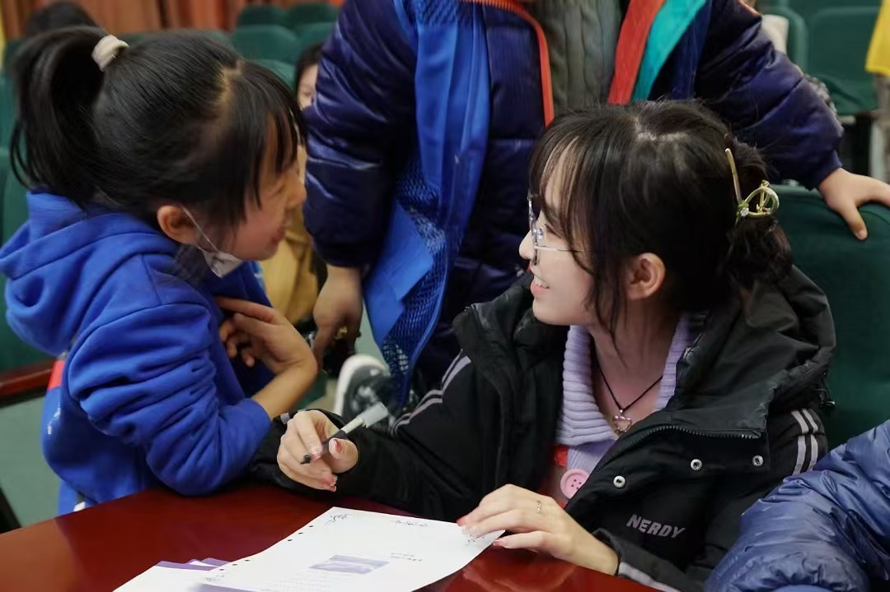

I am an undergraduate student at Xingjian College, Tsinghua University, with a strong passion for robotics.
My research focuses on biorobotics and assistive robotics, aiming to develop affordable rehabilitation devices to empower individuals with disabilities and enhance their independence.
I am currently a research assistant at the Intelligent Biomimetic Design Lab, Peking University, supervised by Prof. Guangming Xie. Previously, I worked as a research assistant at the University of Notre Dame under Prof. Edgar Bolívar-Nieto and collaborated with Prof. Yongxia Jia and Prof. Weixi Huang in Tsinghua's Department of Mechanics.
> I am seeking a Master of Science position starting in Fall 2025. Please feel free to reach out if you are interested in my profile or research.
I am currently a research assistant at the Intelligent Biomimetic Design Lab, Peking University, supervised by Prof. Guangming Xie. Previously, I worked as a research assistant at the University of Notre Dame under Prof. Edgar Bolívar-Nieto and collaborated with Prof. Yongxia Jia and Prof. Weixi Huang in Tsinghua's Department of Mechanics.
> I am seeking a Master of Science position starting in Fall 2025. Please feel free to reach out if you are interested in my profile or research.
Publications
Patents
Selected Honors & Awards
- Outstanding Student Cadre
Awarded for exceptional contributions to Tsinghua, ranking in the top 1% of all student leaders, 2024 - First Prize in Tsinghua University “Challenge Cup” Scientific Research and Innovation Competition
(Ranking second among 200 participants) from Tsinghua University, 2023 - Person of the Year of Xingjian College
Award to outstanding students, who ranking in the top 1% in all aspects at Xingjian College, Tsinghua University, 2022 - All-Round Excellence Scholarship
(Top 10% in both Academics and Research) from Tsinghua University, 2021-2023
Misc
I am an excellent student leader, deeply passionate and committed to inspiring student communities and the next generation.

I serve as Vice President of the 48th Student Union of Tsinghua University and President of the 1st Student Union of Xingjian College.

As a teaching assistant for Tsinghua’s underwater robotics course, I also taught physics and robotics in rural China, inspiring underserved communities.

I founded and led the Women's Basketball team at Xingjian College, Tsinghua University, fostering teamwork and promoting sports culture.